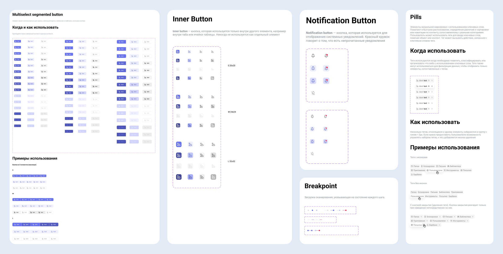
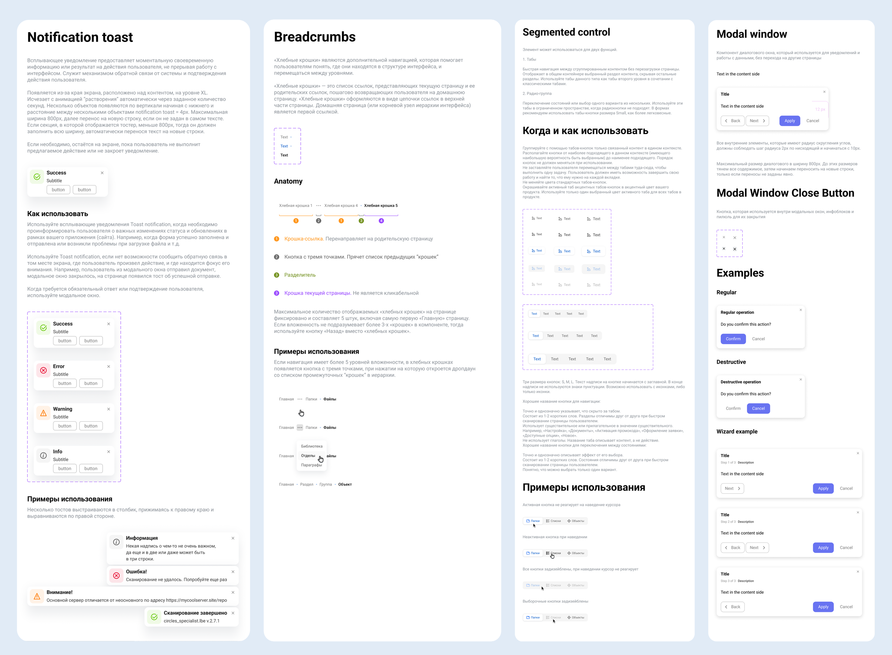

Context
The company had many products, and all of them had to look and behave consistently. At the same time, new interfaces had to ship fast. Without a shared library, every product built basic elements like buttons, tags and notifications in its own way. Because of that, inconsistencies piled up and development got slower. The design system was needed to speed up development and remove the consistency problem across all products at once.
Design challenge
Components had to be described not as pictures but as a system: every state, size and usage rule, equally clear to a designer and a developer, so the library could grow with the product instead of being rebuilt from scratch.

My role
I designed and documented the core components of the design system: variants, states, sizes and usage rules. I put together handoff-ready specs and aligned them with engineering.
Goals
- Describe every component in all its states: default, hover, active, focus, disabled, loading
- Define variants and sizes — Primary / Secondary / Outlined / Ghost, S / M / L
- Capture the rules: when and how to use each component
- Ship specs that let interfaces be assembled without rebuilding the basic elements
Solution
A component as a spec, not a picture: each component is documented in the same structure: purpose, when to use, all states and examples. Below is part of the library.

Outcome
- Consistency: the same elements look and behave the same across the whole product.
- Faster handoff: engineering gets states, sizes and rules in one place, without asking “how is this supposed to work?”
- Scalability: new components are added by the same rules and don't break the ones already in place.